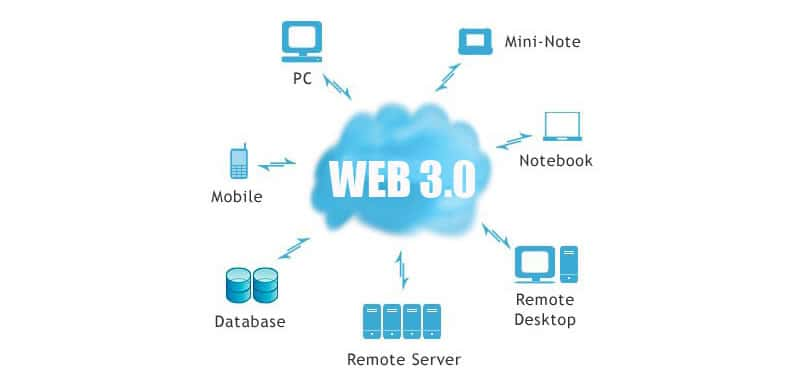

Línea del Tiempo Evolución de la Web
Web 1.0
La Web 1.0 Aparecio en la decada de Los 90* y era utilizada unicamente
para la navegacion como lectura.
Web 2.0
 En el año de 2004 Surgio la Segunda generacion de la tecnologia Web
Creando una base de comunidades, de esa manera originando las redes sociales.
En el año de 2004 Surgio la Segunda generacion de la tecnologia Web
Creando una base de comunidades, de esa manera originando las redes sociales.
Web 3.0

En el año de 2006 apareceria por primera vez la web 3.0 en el articulo de Zeldman,
no obstante fue operativa hasta el 2010 siendo un salto tecnologico, pasando ahora
a ser Aplicaciones web.
Web 4.0
 La web 4.0 Comenzo en el año de 2016 siendo el gran avance de la programacion web, ofreciendo
un comportamiento mas inteligente, mas predictivo, de modo que se capaz de realizar una
afirmacion o peticion
La web 4.0 Comenzo en el año de 2016 siendo el gran avance de la programacion web, ofreciendo
un comportamiento mas inteligente, mas predictivo, de modo que se capaz de realizar una
afirmacion o peticion
Regresar al inicio